Procedure
This procedure shows you how to use webCAT using either your own item bank, or one of the two item banks that are offered as examples. These include:
a 36 maximum-performance item bank named TCAT, for an Dutch-English Vocabulary test with dichotomous items calibrated using a 2-parameter logistic model
a 19 typical-performance item bank of the PROMIS Pediatric Psychological Stress Experiences (PPSE) questionnaire (self-report; 8-17yrs old; see Bevans et al., 2018), with 19 polytomous items, calibrated using a graded response model.
Throughout this tutorial, a callout banner like this one will be used to guide you through the steps of using one of the TCAT or the PPSE item banks.
To continue the tutorial using your own item bank, provide an item bank name of your choice (without spaces) and enter the access token you generated.
* Required field.
For the TCAT: Enter TCAT as the test name and Tok1234 as the access token.
For the PPSE: Enter PPSE as the test name and Tok1234 as the access token.
Step 0: Complete the item bank information file
This step is required only if you would like to construct your own item bank file. If you would like to use one of the examples, please skip this step and go to Step 1.
It is essential that the file has the correct structure1 if you want to use your own item bank. In this step, you can download a blueprint that you can edit and fill in with all the necessary information.
The item bank information file must be a Comma-Separated Values (.csv) file, with specific column names and a specific structure. The number of rows should correspond to the number of available items.
The first column, labelled
ItemLabel, must contain the item labels.The second column, labelled
Item, must contain the item stems.The next columns must contain the response options, labeled
Choice1,Choice2, and so on, up to the number of available choices.
Note: In this version, all items must have the same number of response options.The next column, labelled
Scores, must contain the item scores. A possible format for a dichotomous item with 4 response options could be0100indicating that the second response option is scored as 1 (e.g., correct answer). For polytomous items the scores should range from0up to the total number of categories minus 1, e.g.,0123for 4 response options.The next columns contain the items’ discrimination (slope) parameters.
For \(l\) dimensions, \(l\) columns are required, labelleda1,a2, etc. For a unidimensional structure, there is only one parameter, and therefore one column labelleda1.The next column, labelled
d, contains the items’ difficulty (location or intercept) parameters.
Step 1: Upload the item bank information file
Once you have completed the item bank information file, upload it as a CSV file. Choose the file and click Submit File.
Step 2: Configuration of the test
In Step 2, first select the IRT model that was used to obtain the item parameters in the item bank information file.
Second, select the type of CAT that is required: If a fixed-length CAT is selected, the number of items (e.g., the test length) must also be specified. If a variable-length CAT is selected, the required level of measurement precision should be specified (default is \(SE(\hat\theta) = 0.3\)).
Third the item parameterization must be specified (i.e., which parameters define the item response function; varies among different softwares).
The survey/test is generated using the mirtCAT::mirtCAT() function with the following inputs:
criteria = "MI" or criteria = "Drule" for unidimensional and multidimensional tests respectively,
start_item = "MI" for first item selection, and method = "EAP" for ability estimation.
If you want to use different values only for these three arguments, please specify them as an R list below:
* Required field.
For the TCAT, a configuration file has already been created for a fixed-length CAT of 10 items. The item bank was calibrated using a 2PL model.
For the PPSE, a configuration file has already been created for a variable-length CAT with stopping rule \(SE(\hat\theta) = 0.3\). The item bank was calibrated using a graded response model.
Step 3: Qualtrics set up
Step 3 includes all the necessary steps to create the Qualtrics survey/test. We demonstrate the procedure using the PPSE item bank; however, you can follow the same steps using your own item bank. To use the TCAT item bank, specific instructions are provided where necessary.
Step 3.1 - Setup Block
Enter the Qualtrics website and log in with your credentials.
Go to Home page — Create a new project — Survey — and click Get started.
Enter a Name for the Qualtrics project.
The Qualtric project name is not the same as the Test name you specified on this tutorial.
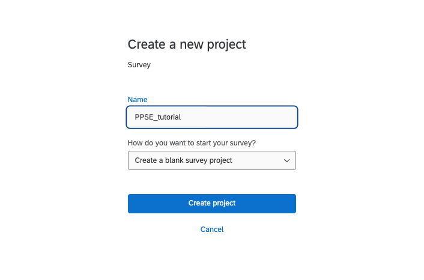
Once you create a new project, modify the default first question. Click on it to select it.
Then from the left panel, under Question Type, choose Text entry type of question.
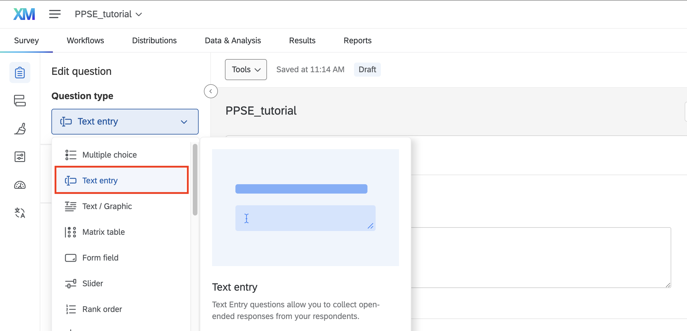
Change the question text to ‘Test Name’.
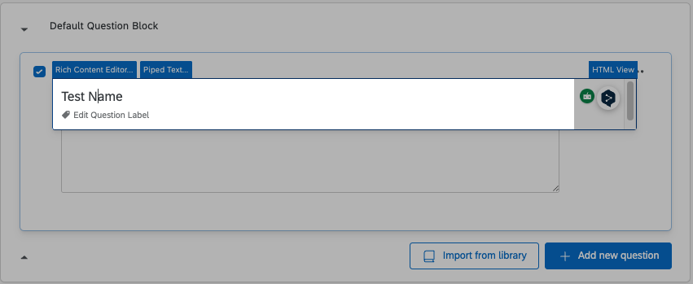
Then, click on the three dots menu on the right corner of the ‘Test Name’ question and select Copy to create new question of similar type.
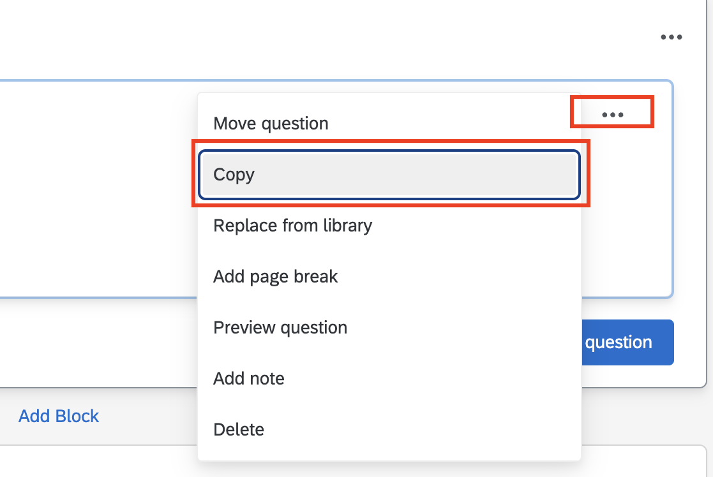
Change the question text to ’Access Token’ at the second question.
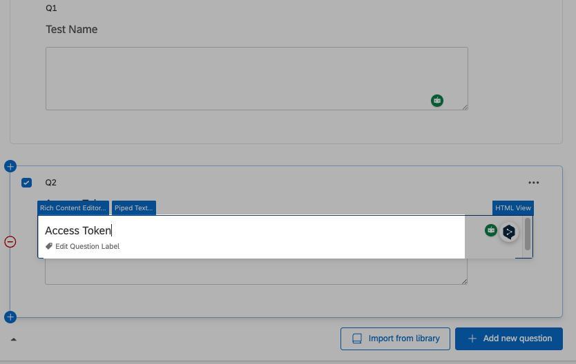
These two questions belong to a single block, which will be the first block in your test. This block is crucial, as it links the Qualtrics survey to the correct test specifications you set up in Steps 1 and 2.
Rename the first Block as ‘Setup’ block, by changing the label above the first question.
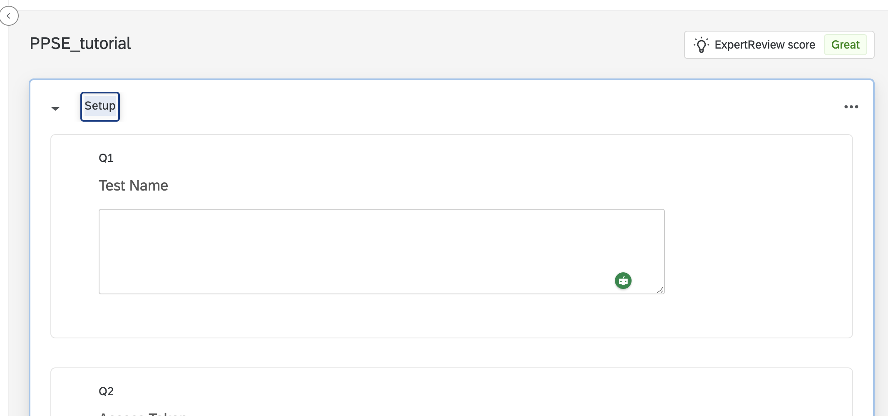
Then, for the ’Test Name’ question, select Add requirements and Force response under the Response Requirements options on the left panel.
Repeat for the ’Access Token’ question.
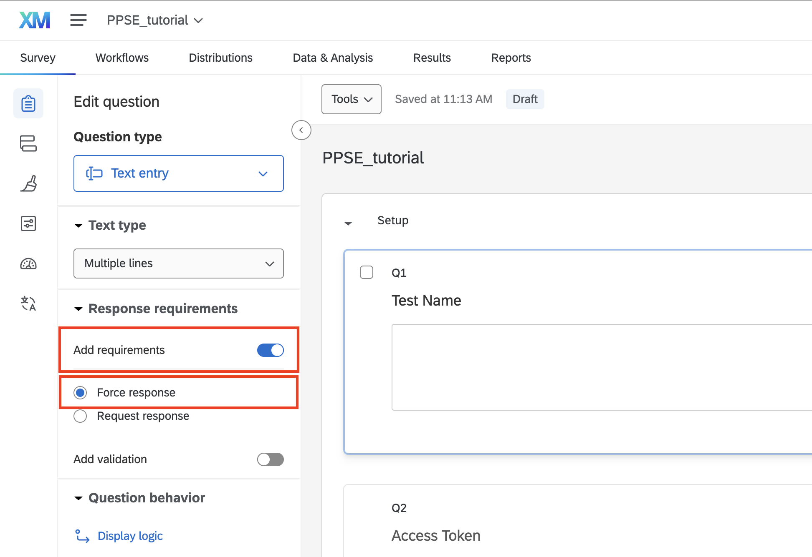
Then, for the ‘Test Name’ question select’Default choices’ from the options on the left panel. Enter the name of your test in the first question as the default choice, and click ‘Save’.
Then repeat the process for the second question, entering the access token that you generated previously.
Here we follow the PPSE by entering PPSE as the test name and Tok1234 as the access token. For the TCAT: Enter TCAT as the test name and Tok1234 as the access token.
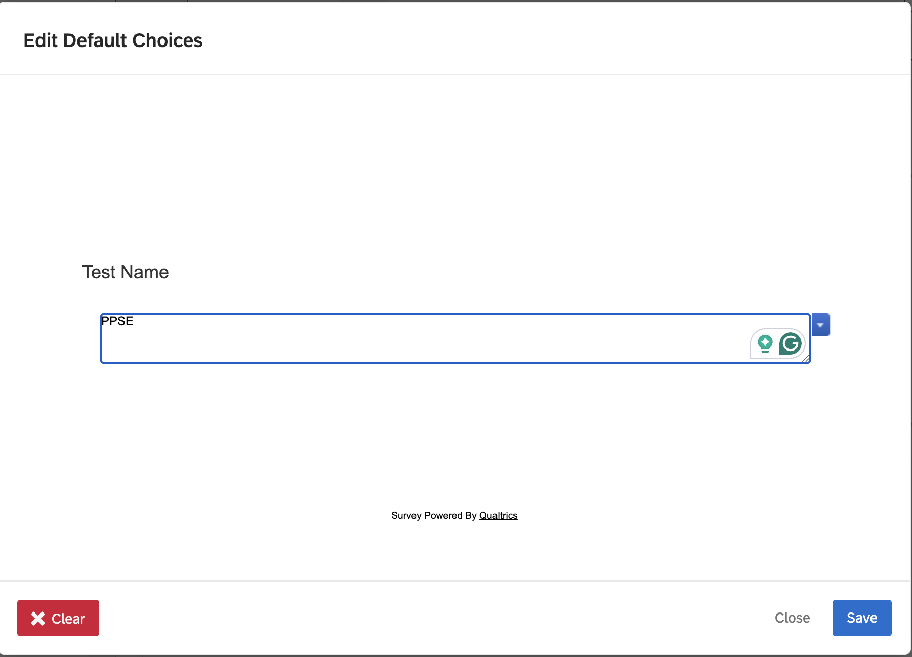
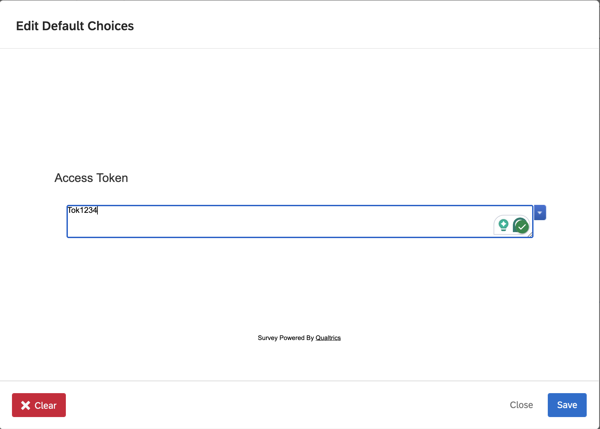
Then select the ‘Access Token’ question and click the JavaScript option on the left side panel.
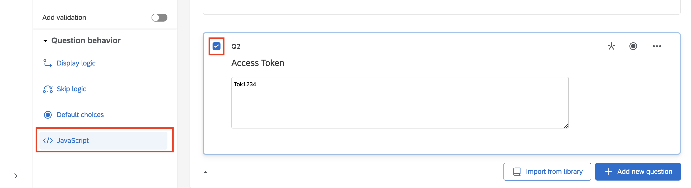
Replace the default lines of code in the pop-up window with the script below and click Save.
Qualtrics.SurveyEngine.addOnload(function() {
this.hideNextButton();
var that = this;
(function(){that.clickNextButton();}).delay(1);
});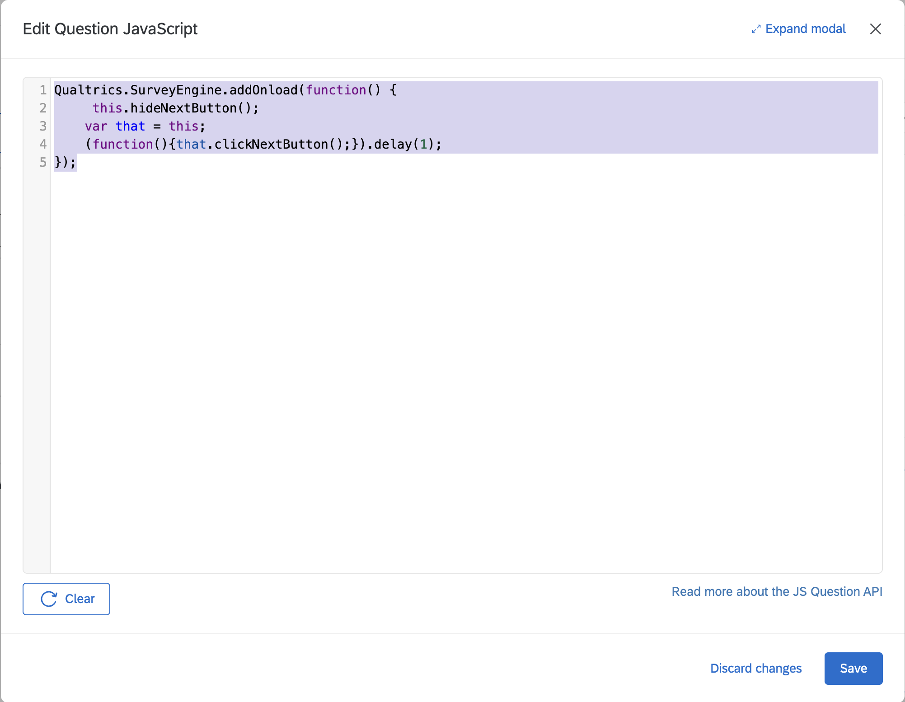
Step 3.2 Introduction Block (optional)
This block consists of a text question. It is optional and can be used to display introductory text for your study, such as guidelines, ethical approvals, participation consent, and contact information.
Add a new block by selecting Add Block
Rename the new block as ‘Intro’
Add new question to the block by selecting ’Add new question’
and then ‘Text / Graphic’ type
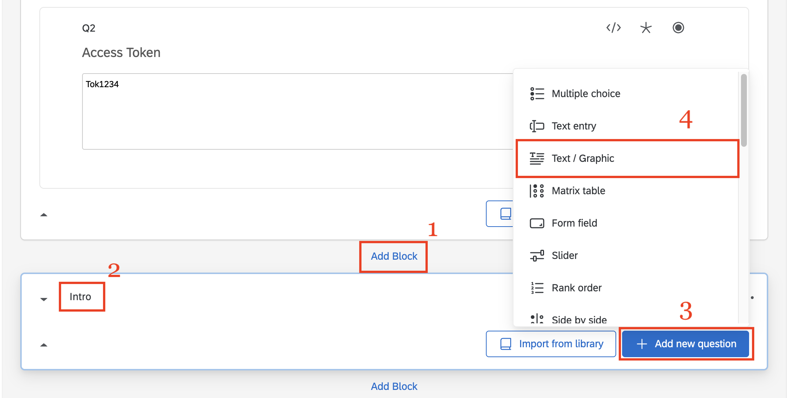
This does not serve as an actual question; rather, it displays all the necessary information for the test user.
In this example we add some plain text:

Step 3.2 Extra Block (optional)
Similarly to the Intro block, you can add an additional block, here labelled as ‘Extra’, with questions you would like to appear before the actual CAT. These may include demographic or other personal questions. In this example, the ‘Extra’ block consists of two dummy questions: One is for gender and the other is for age.
No CAT methods are configured for the ‘Extra Block’. All users will be asked the same questions.
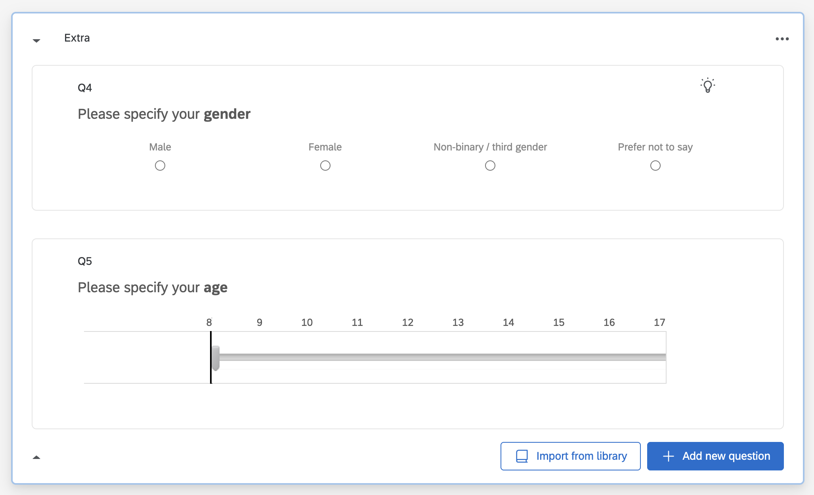
Step 3.3 CAT Initialization Block
Similarly,
- Add a new block,
- Rename it to ‘Init’
- Add a new Text / Entry question type,
- Enter the phrase ‘Loading…’ as question text.
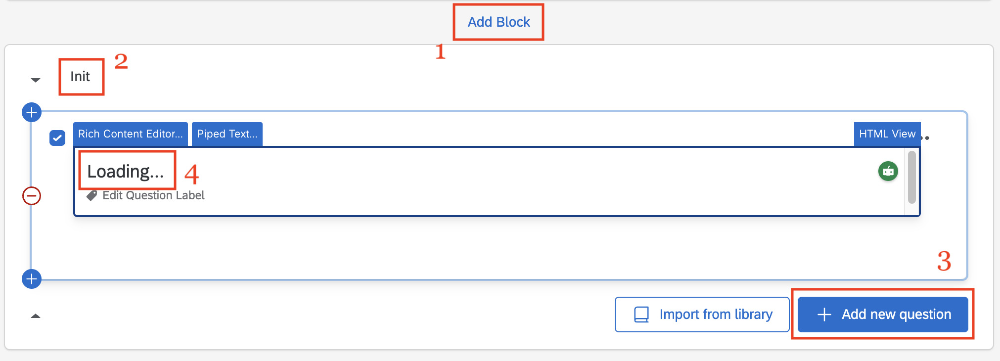
For the ‘Loading…’ question, select the ’Javascript’ option from the left panel.
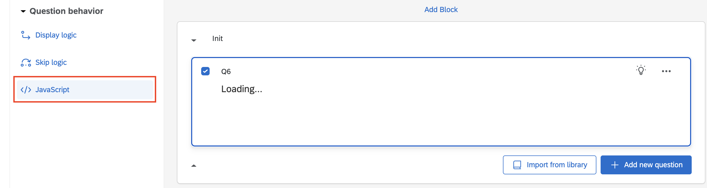
Replace the default lines of code in the pop-up window with the script below and click ‘Save’:
Qualtrics.SurveyEngine.addOnload(function() {
let answers = {
// empty for now
};
//console.log(answers);
// CALL
fetch("https://qualcat.duckdns.org/api/v0/init", {
method: "POST",
headers: {
"Content-Type": "application/json",
"x-api-key": "${q://QID2/ChoiceTextEntryValue}", // passwrd
"userid": "${e://Field/SessionID}", // username
"catName": "${q://QID1/ChoiceTextEntryValue}" // CAT name
},
body: JSON.stringify(answers)
})
.then(response => response.json())
.then(data => {
console.log("API returned:", data); // Debug
// Store the API result in Embedded Data
Qualtrics.SurveyEngine.setEmbeddedData("stop_crit", data.stop_crit);
Qualtrics.SurveyEngine.setEmbeddedData("next_q", data.next_q);
Qualtrics.SurveyEngine.setEmbeddedData("item_num", data.item_num);
var arr = data.choices;
for (var i = 0; i < arr.length; i++) {
var varName = "choice" + (i + 1);
Qualtrics.SurveyEngine.setEmbeddedData(varName, arr[i]);
}
})
.catch(err => console.error("API error:", err));
this.hideNextButton();
var that = this;
(function(){that.clickNextButton();}).delay(4);
});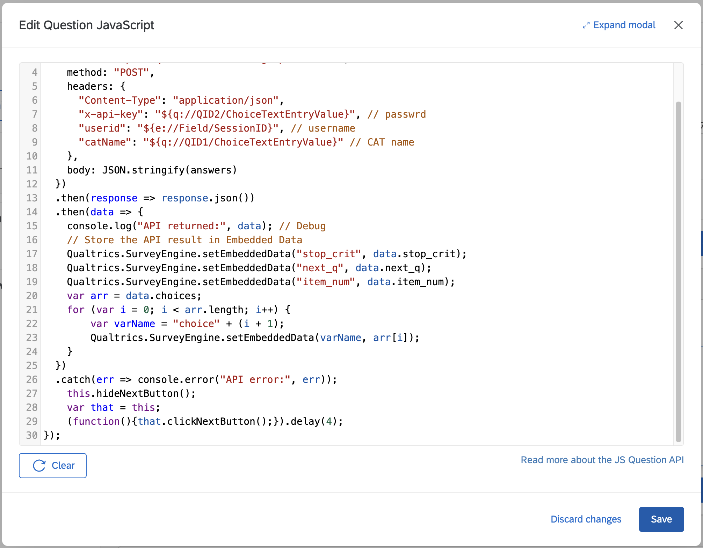
Step 3.4 Question Block
Add a new block, labelled as ‘Question’.
Then, add a Multiple choice question type.
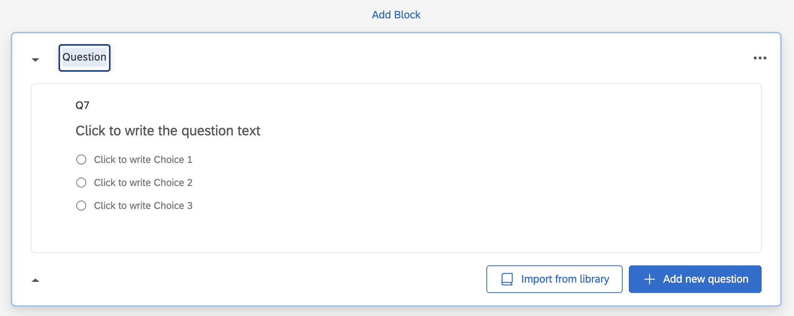
Select Choices from the left panel and choose the number of response options for your test under Number of choices. Here is set to 5 for the PPSE questionnaire.
NoteFor the TCAT: Select 4 number of choices.
Replace the ‘Click to write the question text’ with this line of code
${e://Field/next_q}Replace the ‘Click to write Choice 1’ with
${e://Field/choice1},‘Click to write Choice 2’ with${e://Field/choice2}, ‘Click to write Choice 3’ with${e://Field/choice3}and so on for all available choices.
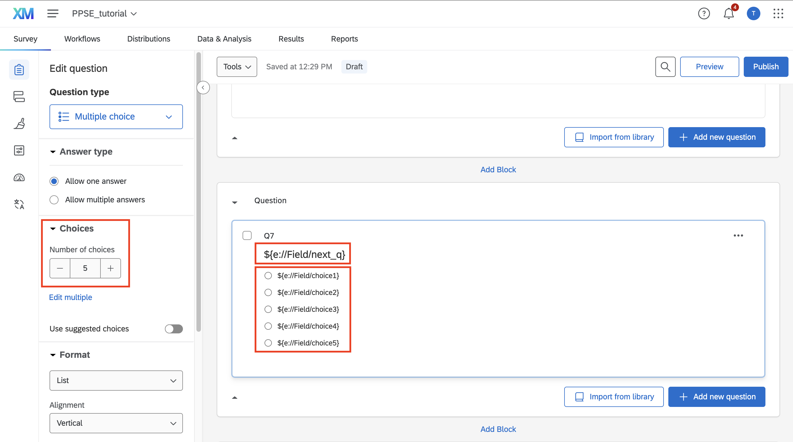
Next, click the ‘Javascript’ button on the left side panel, and replace code, paste the following script and click ‘Save’:
Qualtrics.SurveyEngine.addOnReady(function() {
// 1. clear Qualtrics internal answer
this.setChoiceValue("", false);
// 2. clear any recorded choice values
var choices = this.getChoices();
for (var i = 0; i < choices.length; i++) {
this.setChoiceValue(choices[i], false);
}
// 3. clear UI radios
jQuery("#" + this.questionId + " input[type='radio']").prop("checked", false);
});For TCAT, and for maximum-performance test in general you should consider display the answer choices in a random order. When you make the item bank information file in Step 2, it is convenient to paste all the correct answers into column Choice1 and make the Scores column the same for all the items (e.g. 1000 for dichotomous items).
For typical-performance test, like the PPSE example we demonstrate here, DO NOT display answers in random order. Please, continue to Step 3.5.
Select the question in the ‘Question’ block.
Select the ‘Choice randomization’ optionin the left side panel.
Then choose ‘Display answers in a random order’ and click ‘Save’.
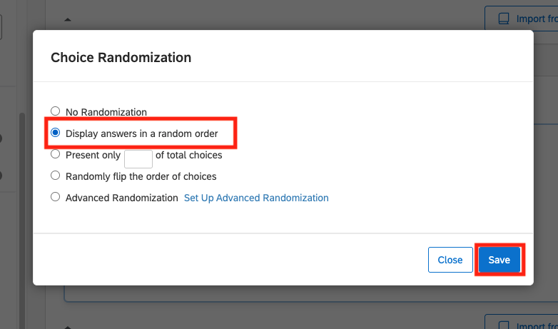
Step 3.5 - Main CAT Block
- Add a new question block
- Name it ‘CAT’
- Add a new question,
- Text/Graphic type of question
- Replace the question text with an empty space.
- Then, click JavaScript, and replace everything with the following JavaScript code
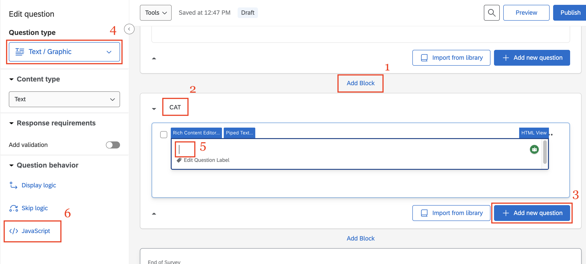
Qualtrics.SurveyEngine.addOnload(function()
{
let answers = {
q_resp: "${q://QID7/SelectedChoicesRecode}",
item_num: "${e://Field/item_num}"
};
console.log("API sent:", answers);
// CALL
fetch("https://qualcat.duckdns.org/api/v0/cat", {
method: "POST",
headers: {
"Content-Type": "application/json",
"x-api-key": "${q://QID2/ChoiceTextEntryValue}", // token
"userid": "${e://Field/SessionID}", // username
"catName": "${q://QID1/ChoiceTextEntryValue}" // CAT name
},
body: JSON.stringify(answers)
})
.then(res => res.json())
.then(data => {
console.log("API returned:", data);
// Store the API result in Embedded Data
Qualtrics.SurveyEngine.setEmbeddedData("iter", data.iter);
Qualtrics.SurveyEngine.setEmbeddedData("next_q", data.item);
Qualtrics.SurveyEngine.setEmbeddedData("item_num", data.item_num);
Qualtrics.SurveyEngine.setEmbeddedData("se_thetahat", data.se_thetahat);
Qualtrics.SurveyEngine.setEmbeddedData("thetahat", data.thetahat);
Qualtrics.SurveyEngine.setEmbeddedData("pat", data.pat);
Qualtrics.SurveyEngine.setEmbeddedData("J", data.pat.length);
Qualtrics.SurveyEngine.setEmbeddedData("adm_items", data.iter);
Qualtrics.SurveyEngine.setEmbeddedData("stop", data.stop); //v0.2
var arr = data.choices;
for (var i = 0; i < arr.length; i++) {
var varName = "choice" + (i + 1);
Qualtrics.SurveyEngine.setEmbeddedData(varName, arr[i]);
}
})
.catch(err => console.error("API error:", err));
this.hideNextButton();
var that = this;
(function(){that.clickNextButton();}).delay(1);
});Click the drop down Tools Tab and select “Show internal IDs’
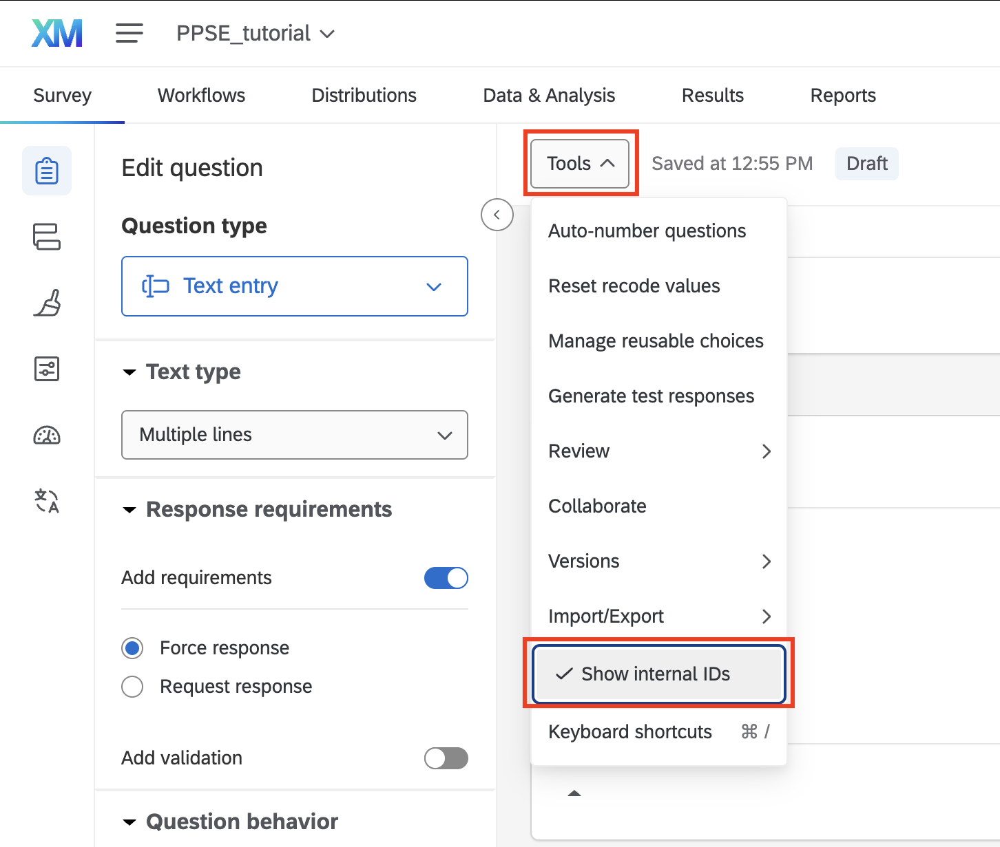
Make sure that the internal ID, QID8 in this example, matches the id in the fourth line of the script you entered before. If not, edit the script by entering the correct internal ID.
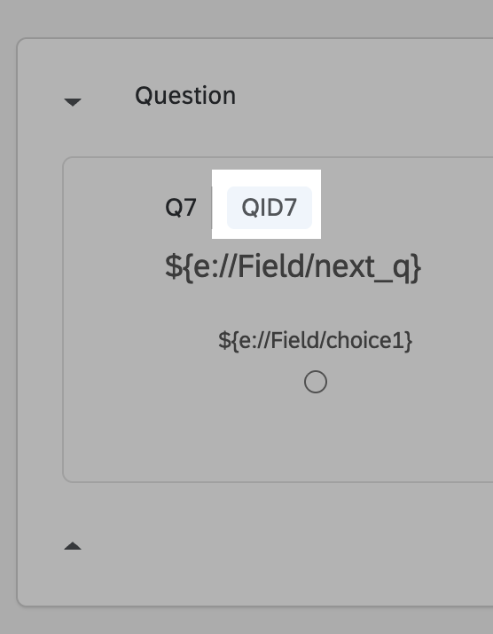
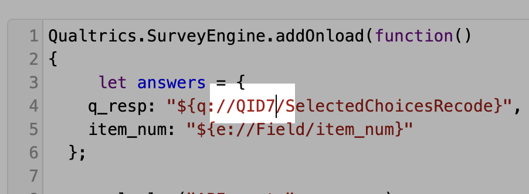
Step 3.6 - Survey Flow Setup
Click the Survey Flow button on the left side bar.
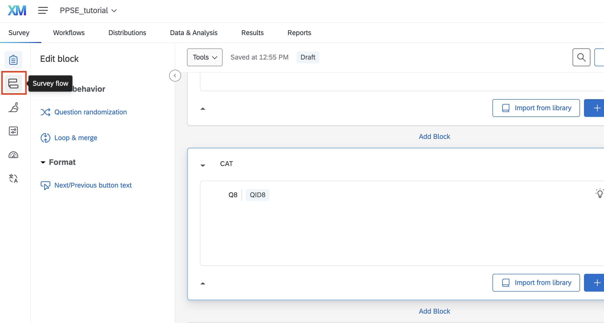
All the question blocks we created before, should be visible in a sequential flow as shown below.
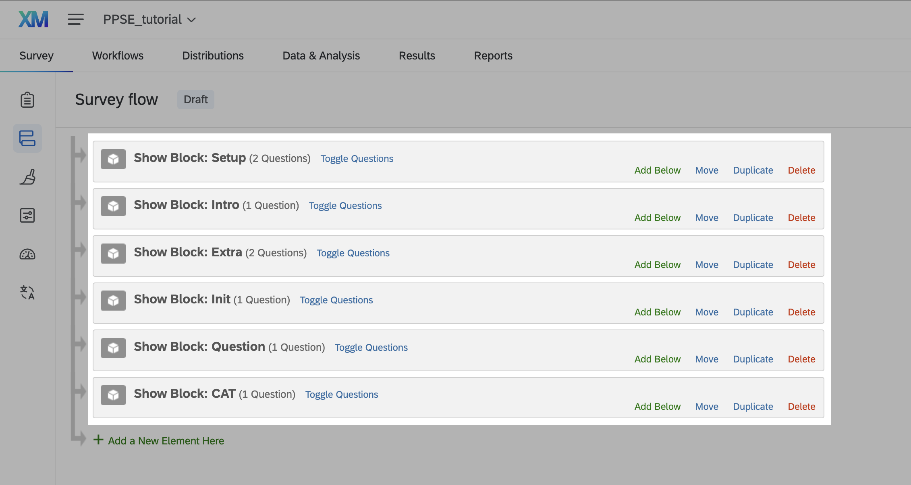
In the Init block, click Add Below and select Group.
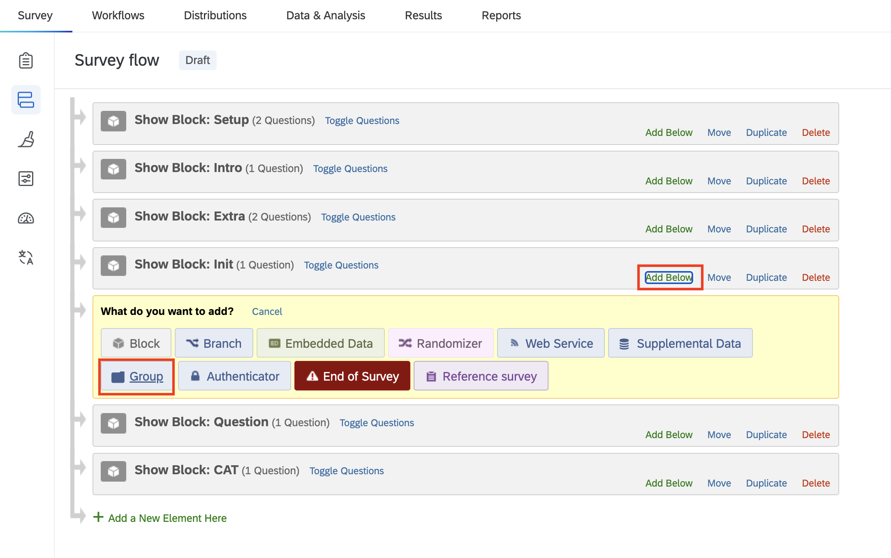
Rename the new group as ‘Loop’ .
Then next to the Question block click the Move button.
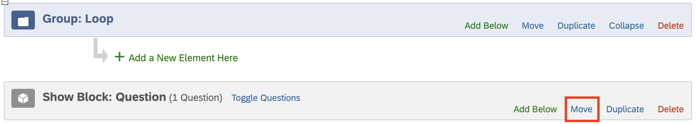
Move the Question block under the Loop groupby dragging it .
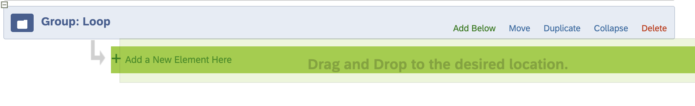
The Question block is now part of the Loop group.
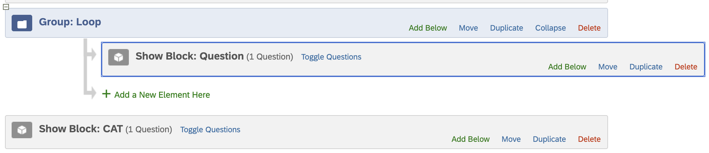
Similarly, move for the CAT block into the Loop group, under the Question block.
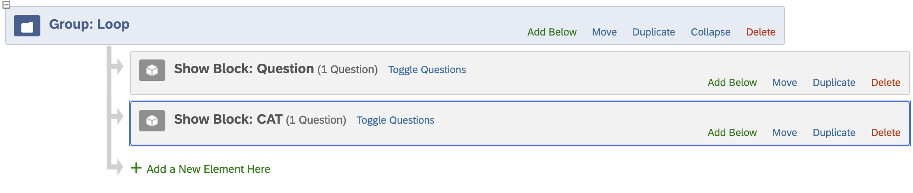
Then click ‘+ Add a New Element’ under the CAT block, inside the Loop group and select’Branch’.
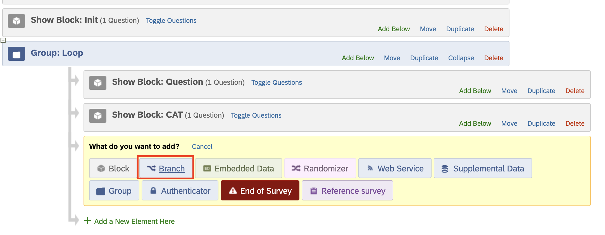
Click ’Add a Condition’
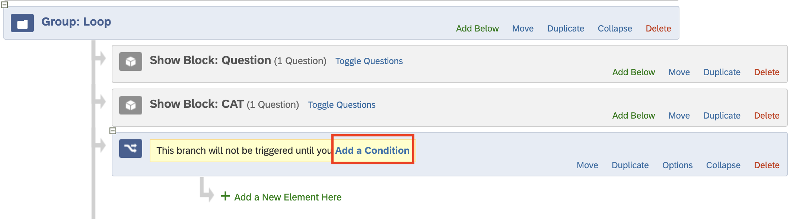
Select ‘Embedded Data’.
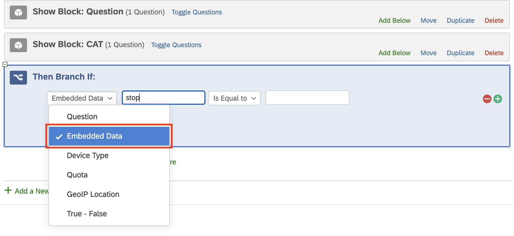
Then,
Enter the word ‘stop’ for the embedded data
Select ‘Is Equal To’ and enter the number ‘1’
Click OK
Add a New Element under the if branch
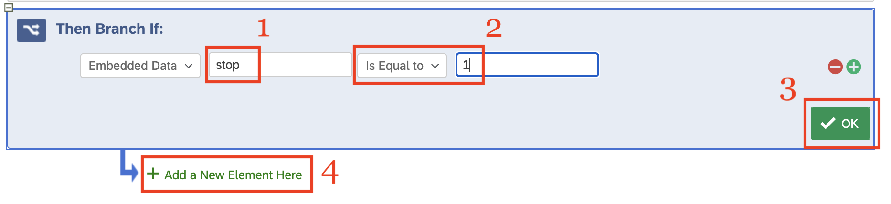
Select the End of Survey element
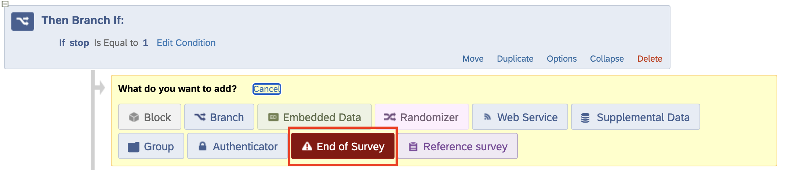
The survey flow should now look like this
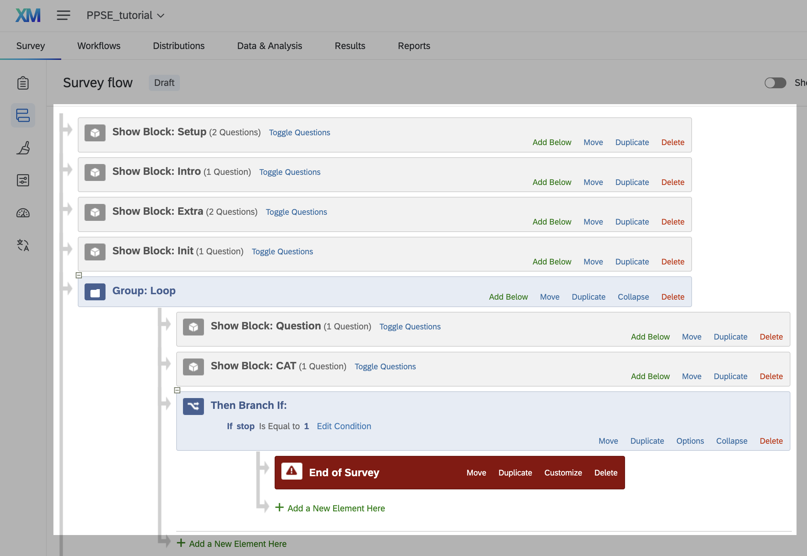
Now, click the button Duplicate next to the loop group, as many times as the available total number of items. For this example, the PPSE item bank has a total of 19 items, therefore click the Duplicate button 19 times.
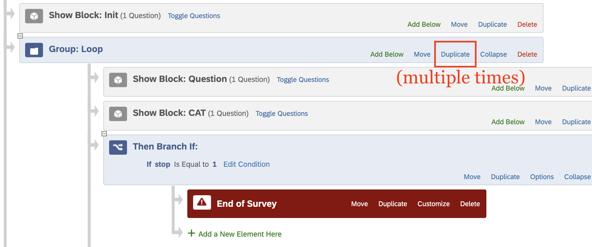
Scrolling down the Loop group should be duplicated 19 times.
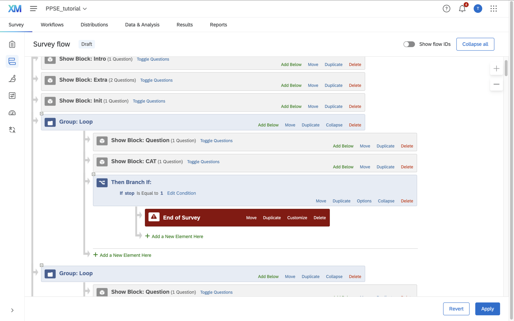
Then click Apply to apply this flow set up to the survey.
Step 3.7 - Publish the Test/Survey
Go to ‘Survey Options’
Select ’Responses’
Uncheck the options Back Button and Allow respondents to finish later

- Then go to ‘Builder’ options again, and
- click ‘Publish’
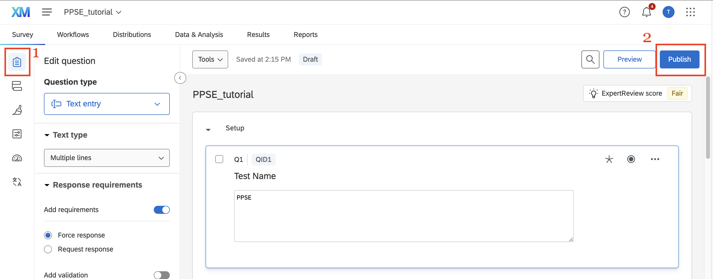
After following short instructions, the survey will be published and a unique anonymous URL will be activated.
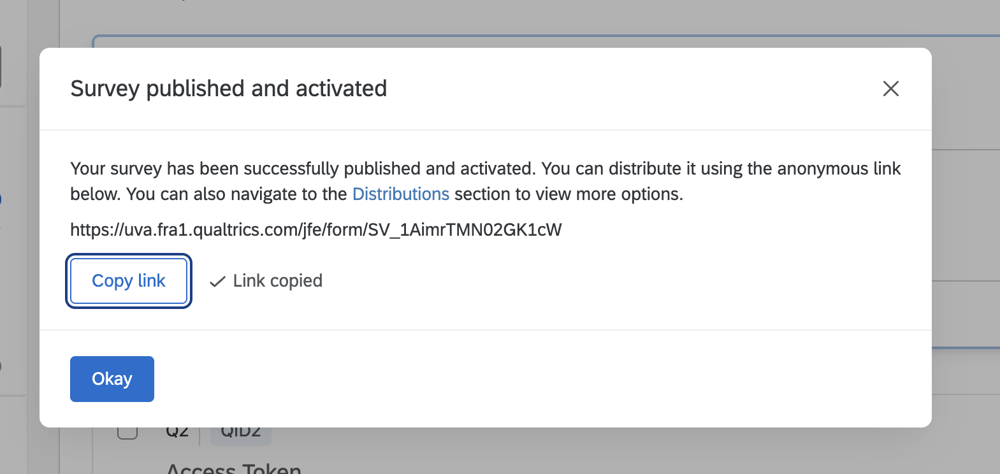
Now, the link https://uva.fra1.qualtrics.com/jfe/form/SV_1AimrTMN02GK1cW corresponds to a Qualtrics survey of the PROMIS Pediatric Psychological Stress Experiences (PPSE) item bank using computerized adaptive testing (CAT).
For the TCAT published version go to https://uva.fra1.qualtrics.com/jfe/form/SV_bKF45qMy1dq7Ioe